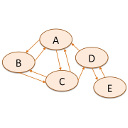

|
Recommender Systems |
Recent Posts all posts

|
How old am I? |

|
1822direkt |

|
Bugs |

|
Education platform |
|  |
Usernames |
|
|
Regression |
Flask and Gunicorn |
Git - Version Control Done Right |

|
Testing in Python |